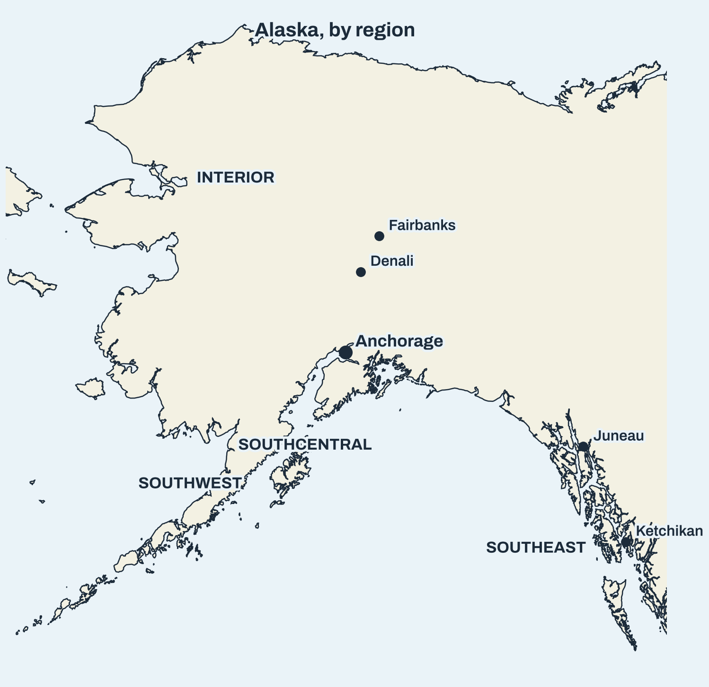
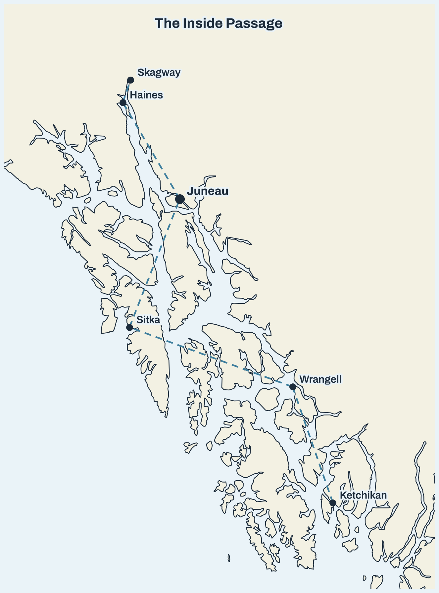
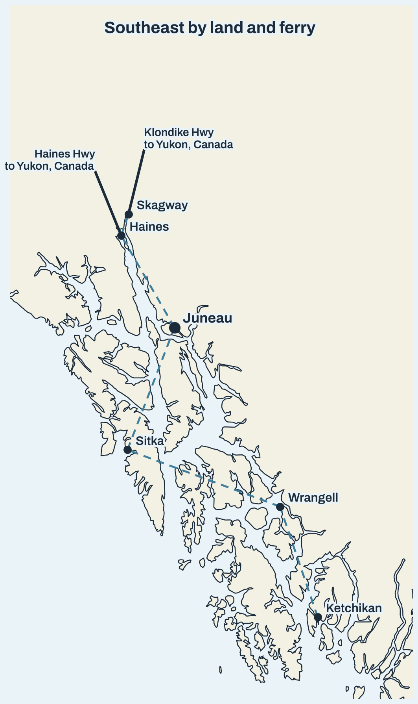
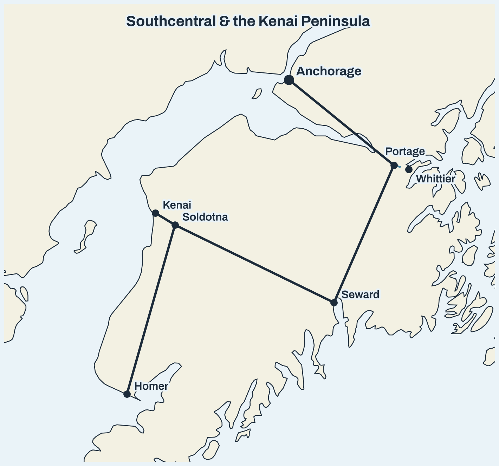
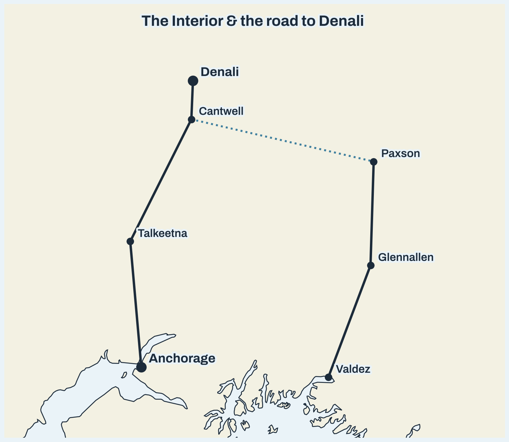
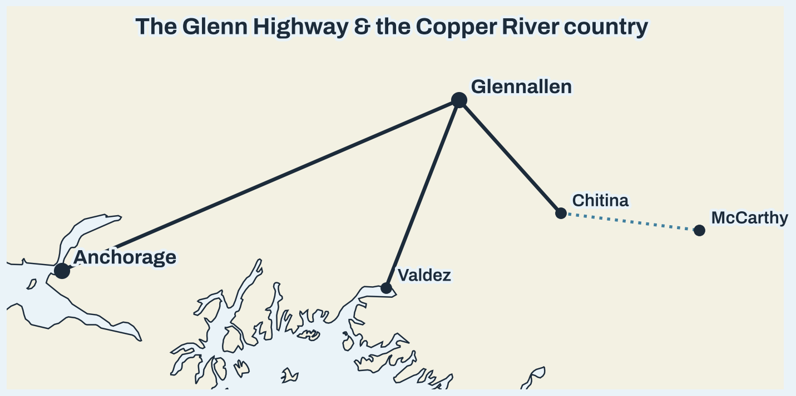
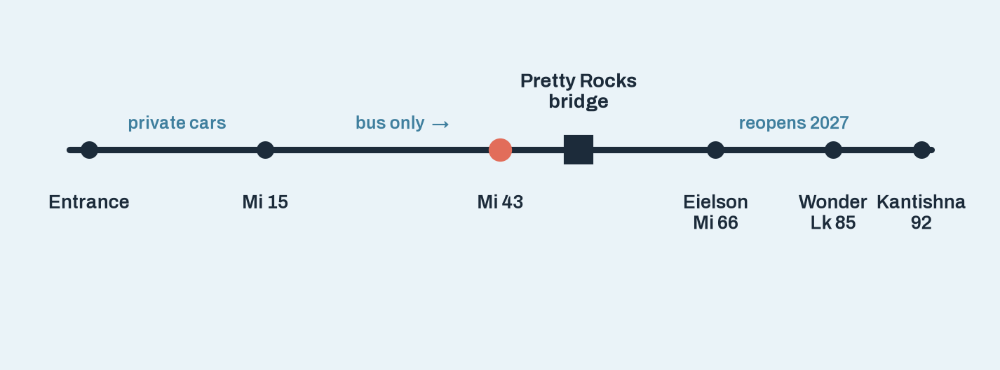
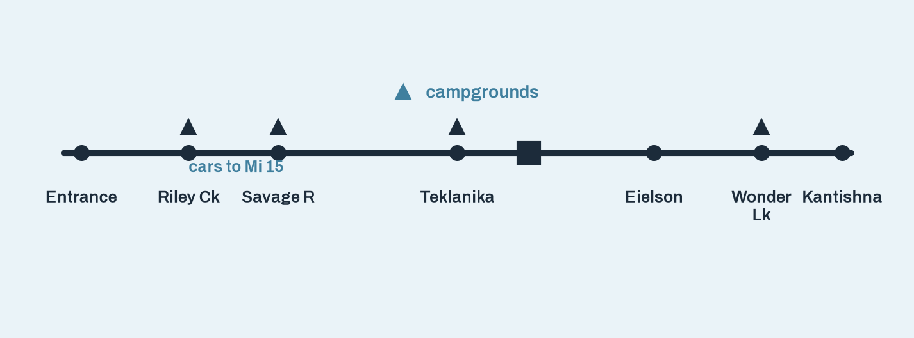
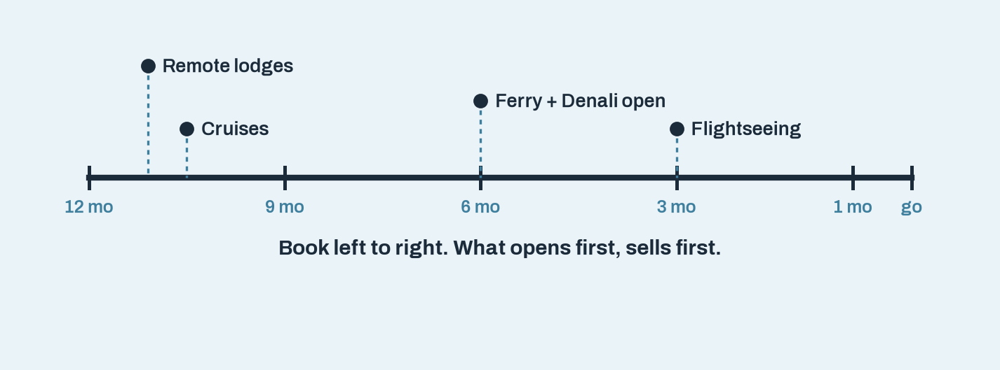

Alaska, by Region
Orientation before the month-by-month tables: Southeast, Southcentral, Interior, Southwest at a glance.
Download PNG →{kind=link}
{kind=link}

The Inside Passage
The Alaska Marine Highway route, Ketchikan to Skagway, with every Southeast port call.
Download PNG →{kind=link}

Southeast by Land and Ferry
The same Southeast towns, plus the two roads out of the panhandle to the Yukon.
Download PNG →{kind=link}

Southcentral & the Kenai Peninsula
Anchorage to Seward, Soldotna, Kenai, and Homer, plus the Whittier ferry from Portage.
Download PNG →{kind=link}

The Interior & the Road to Denali
Anchorage to Denali via Talkeetna and Cantwell, plus the Denali Highway to Paxson and the Richardson Highway.
Download PNG →{kind=link}

The Glenn Highway & Copper River Country
Anchorage to Glennallen and Valdez, plus Chitina and the McCarthy Road to McCarthy and Kennecott.
Download PNG →{kind=link}

Denali Park Road
Entrance to Kantishna, with the Pretty Rocks bridge and the private-car / bus-only split.
Download PNG →{kind=link}

Denali Detail: Campgrounds & Stops
Riley Creek, Savage River, Teklanika, and Wonder Lake campgrounds, the Mile 15 limit, and Eielson.
Download PNG →{kind=link}

The Booking-Window Timeline
The Chapter 7 countdown as a single graphic. See the full interactive version on the Booking Calendar page.
Download PNG →{kind=link}